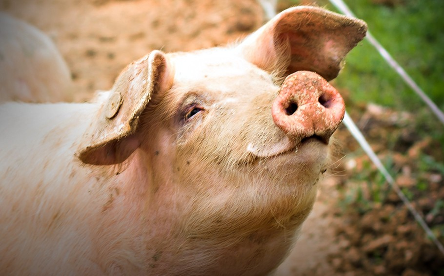

Pig
Smart farm animals raised for meat and companionship.
- Species: Sus scrofa domesticus
- Diet: Omnivore
- Size: 2-4 ft tall
- Weight: 150-700 lbs
- Life span: 10-15 years
- Habitat: Farms
- Found: Worldwide
- Can be pet: Sometimes
Trivia: Pigs are highly social and can learn tricks like dogs.